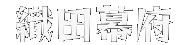
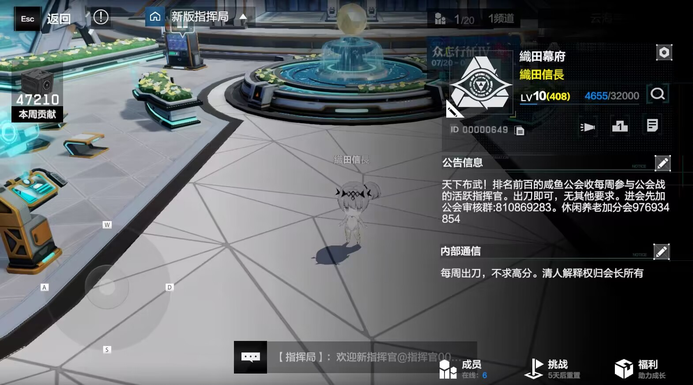

首页
__________________________________
人员
__________________________________
扫码加群
__________________________________
下载战双
__________________________________
2023/7/5 更新
公会战标准：
加入时长大于1周
本周贡献0
累计贡献小于8w
同时满足以上3条者将被清理离开公会。
只满足1、2而未登陆时长大于1周者亦将被清理。（公会满员后將跟据以上因素排序，清理最接近清理标准的成员）
